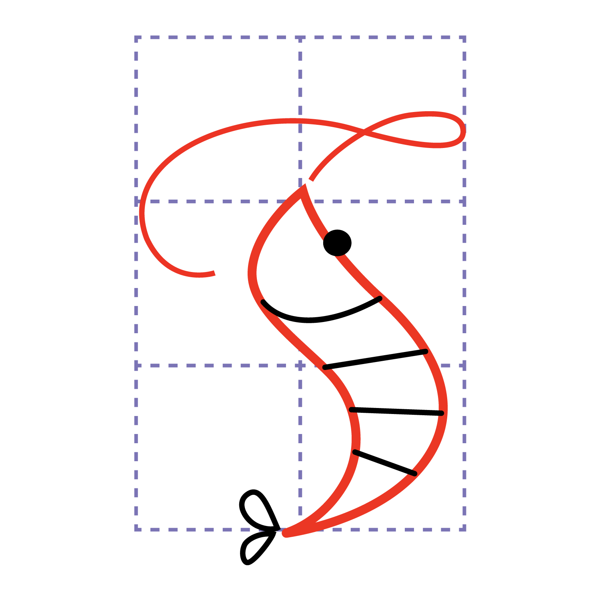
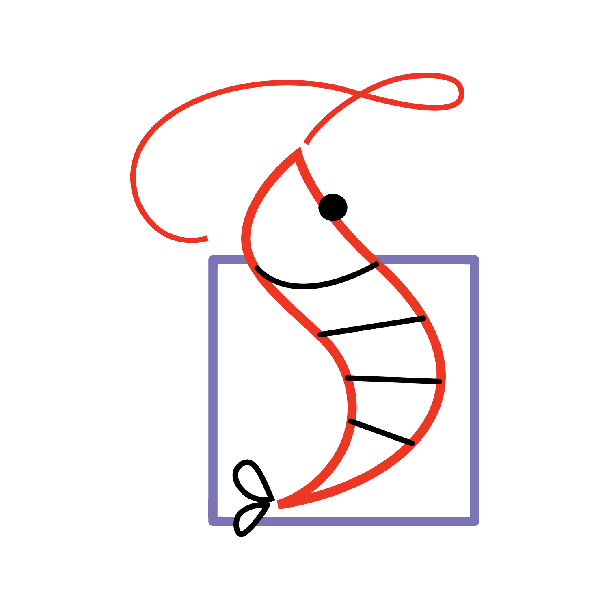

Color · primary
tepup-logo.png

Framed lockup
tepup-logo-alt.png
Mono · on dark
tepup-logo-bw.png
A hand-drawn shrimp = a stylised "T"
"Tép" = shrimp in Vietnamese. Red body, black sketch tail, single dot eye. The
only
hand-drawn element in the brand — don't extend the doodle aesthetic elsewhere.